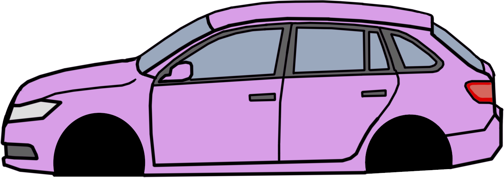
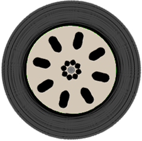
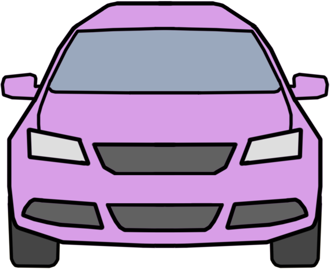
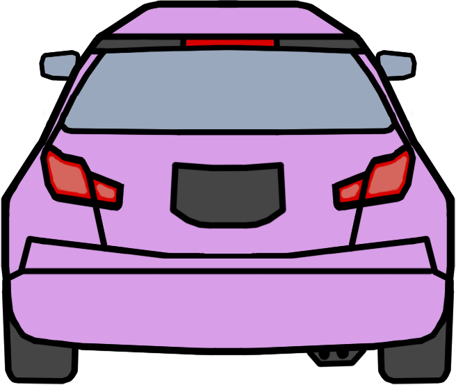
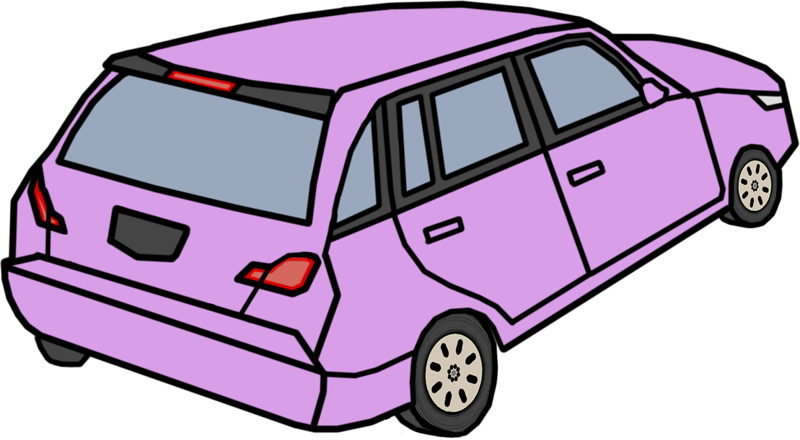
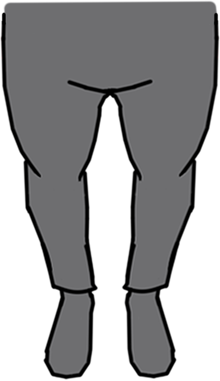

Сценарий: Не выбран
 




Жест 1: Руки в стороны
Едут: лево↔право (верхние) | Идёт: горизонтальный уникальный
Жест 2: Правая рука вперед
Едут: слева все, с груди→направо
Жест 3: Рука вверх
ВСЕ СТОЯТ (красный свет)
Жест 4: Свободный режим
Едут: верх↔низ